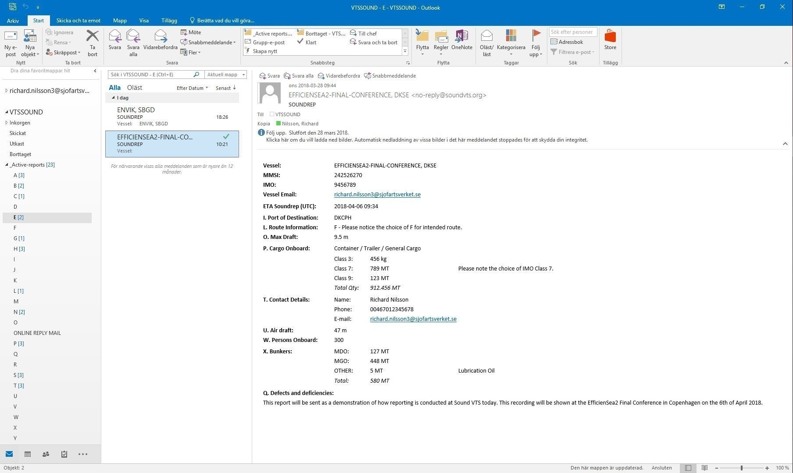

SRS/VTS Reporting
2018-04-06
Richard Nilsson
Last Slide


Location of SOUNDREP
Solutions for VTS/SRS reporting
Reporting at Soundrep today
Email report
Interaction between services

Report in Azure DB